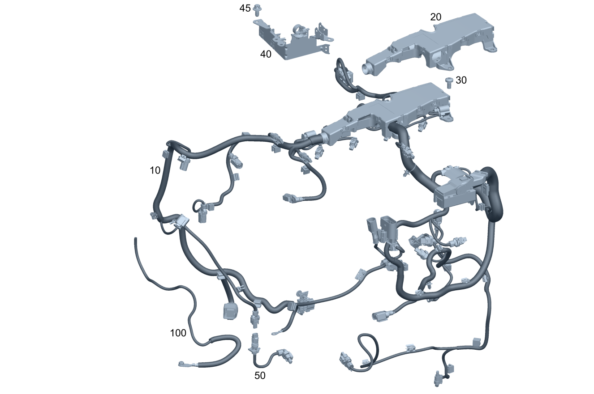

| № | Артикул | Название | Кол. | Примечание |
|---|---|---|---|---|
| 10 | A 274 150 40 86 | Жгут электропр. двигателя (ENGINE WIRING HARNESS) | 1 | |
| 10 | A 274 150 81 88 | Жгут электропр. двигателя (ENGINE WIRING HARNESS) | 1 | |
| 10 | A 274 150 38 03 | Жгут электропр. двигателя (ENGINE WIRING HARNESS) | 1 | |
| 10 | A 274 150 49 04 | Жгут электропр. двигателя (ENGINE WIRING HARNESS) | 1 | |
| 10 | A 274 150 67 86 | Жгут электропр. двигателя (ENGINE WIRING HARNESS) | 1 | |
| 10 | A 274 150 62 86 | Жгут электропр. двигателя (ENGINE WIRING HARNESS) | 1 | |
| 10 | A 274 150 77 88 | Жгут электропр. двигателя (ENGINE WIRING HARNESS) | 1 | |
| 10 | A 274 150 34 56 | Жгут электропр. двигателя (ENGINE WIRING HARNESS) | 1 | |
| 10 | A 274 150 86 56 | Жгут электропр. двигателя (ENGINE WIRING HARNESS) | 1 | |
| 10 | A 274 150 84 86 | Жгут электропр. двигателя (ENGINE WIRING HARNESS) | 1 | |
| 10 | A 274 150 14 56 | Жгут электропр. двигателя (ENGINE WIRING HARNESS) | 1 | |
| 10 | A 274 150 85 56 | Жгут электропр. двигателя (ENGINE WIRING HARNESS) | 1 | |
| 10 | A 274 150 83 86 | Жгут электропр. двигателя (ENGINE WIRING HARNESS) | 1 | |
| 10 | A 274 150 75 88 | Жгут электропр. двигателя (ENGINE WIRING HARNESS) | 1 | |
| 10 | A 274 150 86 88 | Жгут электропр. двигателя (ENGINE WIRING HARNESS) | 1 | |
| 10 | A 274 150 32 33 | Жгут электропр. двигателя (ENGINE WIRING HARNESS) | 1 | |
| 10 | A 274 150 53 56 | Жгут электропр. двигателя (ENGINE WIRING HARNESS) | 1 | |
| 10 | A 274 150 63 86 | Жгут электропр. двигателя (ENGINE WIRING HARNESS) | 1 | |
| 10 | A 274 150 76 88 | Жгут электропр. двигателя (ENGINE WIRING HARNESS) | 1 | |
| 10 | A 274 150 87 88 | Жгут электропр. двигателя (ENGINE WIRING HARNESS) | 1 | |
| 10 | A 274 150 23 86 | Жгут электропр. двигателя (ENGINE WIRING HARNESS) | 1 | |
| 10 | A 274 150 44 86 | Жгут электропр. двигателя (ENGINE WIRING HARNESS) | 1 | |
| 10 | A 274 150 88 88 | Жгут электропр. двигателя (ENGINE WIRING HARNESS) | 1 | |
| 10 | A 274 150 17 02 | Жгут электропр. двигателя (ENGINE WIRING HARNESS) | 1 | |
| 10 | A 274 150 33 86 | Жгут электропр. двигателя (ENGINE WIRING HARNESS) | 1 | |
| 10 | A 274 150 87 86 | Жгут электропр. двигателя (ENGINE WIRING HARNESS) | 1 | |
| 10 | A 274 150 21 86 | Жгут электропр. двигателя (ENGINE WIRING HARNESS) | 1 | |
| 10 | A 274 150 98 20 | Жгут электропр. двигателя (ENGINE WIRING HARNESS) | 1 | |
| 10 | A 274 150 50 56 | Электрический жгут (ELECTRICAL WIRING HARNESS) | 1 | |
| 10 | A 274 150 61 56 | Жгут электропр. двигателя (ENGINE WIRING HARNESS) | 1 | |
| 10 | A 274 150 59 86 | Жгут электропр. двигателя (ENGINE WIRING HARNESS) | 1 | |
| 10 | A 274 150 93 88 | Жгут электропр. двигателя (ENGINE WIRING HARNESS) | 1 | |
| 10 | A 274 150 70 20 | Жгут электропр. двигателя (ENGINE WIRING HARNESS) | 1 | |
| 10 | A 274 150 71 20 | Жгут электропр. двигателя (ENGINE WIRING HARNESS) | 1 | |
| 10 | A 274 150 12 86 | Жгут электропр. двигателя (ENGINE WIRING HARNESS) | 1 | |
| 10 | A 274 150 41 86 | Жгут электропр. двигателя (ENGINE WIRING HARNESS) | 1 | |
| 10 | A 274 150 15 02 | Жгут электропр. двигателя (ENGINE WIRING HARNESS) | 1 | |
| 10 | A 274 150 04 03 | Жгут электропр. двигателя (ENGINE WIRING HARNESS) | 1 | |
| 10 | A 274 150 45 03 | Жгут электропр. двигателя (ENGINE WIRING HARNESS) | 1 | |
| 10 | A 274 150 17 02 | Жгут электропр. двигателя (ENGINE WIRING HARNESS) | 1 | |
| 10 | A 274 150 00 03 | Жгут электропр. двигателя (ENGINE WIRING HARNESS) | 1 | |
| 10 | A 274 150 18 02 | Жгут электропр. двигателя (ENGINE WIRING HARNESS) | 1 | |
| 10 | A 274 150 01 03 | Жгут электропр. двигателя (ENGINE WIRING HARNESS) | 1 | |
| 10 | A 274 150 50 03 | Жгут электропр. двигателя (ENGINE WIRING HARNESS) | 1 | |
| 10 | A 274 150 50 03 | Жгут электропр. двигателя (ENGINE WIRING HARNESS) | 1 | |
| 10 | A 274 150 33 04 | Жгут электропр. двигателя (ENGINE WIRING HARNESS) | 1 | |
| 10 | A 274 150 08 02 | Жгут электропр. двигателя (ENGINE WIRING HARNESS) | 1 | |
| 10 | A 274 150 13 03 | Жгут электропр. двигателя (ENGINE WIRING HARNESS) | 1 | |
| 10 | A 274 150 13 03 | Жгут электропр. двигателя (ENGINE WIRING HARNESS) | 1 | |
| 10 | A 274 150 13 02 | Жгут электропр. двигателя (ENGINE WIRING HARNESS) | 1 | |
| 10 | A 274 150 15 03 | Жгут электропр. двигателя (ENGINE WIRING HARNESS) | 1 | |
| 10 | A 274 150 15 03 | Жгут электропр. двигателя (ENGINE WIRING HARNESS) | 1 | |
| 10 | A 274 150 15 03 | Жгут электропр. двигателя (ENGINE WIRING HARNESS) | 1 | |
| 10 | A 274 150 53 02 | Жгут электропр. двигателя (ENGINE WIRING HARNESS) | 1 | |
| 10 | A 274 150 02 03 | Жгут электропр. двигателя (ENGINE WIRING HARNESS) | 1 | |
| 10 | A 274 150 46 03 | Жгут электропр. двигателя (ENGINE WIRING HARNESS) | 1 | |
| 10 | A 274 150 46 03 | Жгут электропр. двигателя (ENGINE WIRING HARNESS) | 1 | |
| 10 | A 274 150 19 04 | Жгут электропр. двигателя (ENGINE WIRING HARNESS) | 1 | |
| 10 | A 274 150 54 02 | Жгут электропр. двигателя (ENGINE WIRING HARNESS) | 1 | |
| 10 | A 274 150 03 03 | Жгут электропр. двигателя (ENGINE WIRING HARNESS) | 1 | |
| 10 | A 274 150 12 02 | Жгут электропр. двигателя (ENGINE WIRING HARNESS) | 1 | |
| 10 | A 274 150 16 03 | Жгут электропр. двигателя (ENGINE WIRING HARNESS) | 1 | |
| 10 | A 274 150 16 03 | Жгут электропр. двигателя (ENGINE WIRING HARNESS) | 1 | |
| 10 | A 274 150 51 03 | Жгут электропр. двигателя (ENGINE WIRING HARNESS) | 1 | |
| 10 | A 274 150 51 03 | Жгут электропр. двигателя (ENGINE WIRING HARNESS) | 1 | |
| 10 | A 274 150 45 04 | Жгут электропр. двигателя (ENGINE WIRING HARNESS) | 1 | |
| 10 | A 274 150 89 86 | Жгут электропр. двигателя (ENGINE WIRING HARNESS) | 1 | |
| 10 | A 274 150 96 88 | Жгут электропр. двигателя (ENGINE WIRING HARNESS) | 1 | |
| 10 | A 274 150 08 02 | Жгут электропр. двигателя (ENGINE WIRING HARNESS) | 1 | |
| 10 | A 274 150 08 02 | Жгут электропр. двигателя (ENGINE WIRING HARNESS) | 1 | |
| 10 | A 274 150 90 56 | Жгут электропр. двигателя (ENGINE WIRING HARNESS) | 1 | |
| 10 | A 274 150 97 88 | Жгут электропр. двигателя (ENGINE WIRING HARNESS) | 1 | |
| 10 | A 274 150 10 02 | Жгут электропр. двигателя (ENGINE WIRING HARNESS) | 1 | |
| 10 | A 274 150 32 02 | Жгут электропр. двигателя (ENGINE WIRING HARNESS) | 1 | |
| 10 | A 274 150 32 88 | Жгут электропр. двигателя (ENGINE WIRING HARNESS) | 1 | |
| 10 | A 274 150 11 02 | Жгут электропр. двигателя (ENGINE WIRING HARNESS) | 1 | |
| 10 | A 274 150 91 86 | Жгут электропр. двигателя (ENGINE WIRING HARNESS) | 1 | |
| 10 | A 274 150 64 02 | Жгут электропр. двигателя (ENGINE WIRING HARNESS) | 1 | |
| 10 | A 274 150 08 03 | Жгут электропр. двигателя (ENGINE WIRING HARNESS) | 1 | |
| 10 | A 274 150 48 03 | Жгут электропр. двигателя (ENGINE WIRING HARNESS) | 1 | |
| 10 | A 274 150 48 03 | Жгут электропр. двигателя (ENGINE WIRING HARNESS) | 1 | |
| 10 | A 274 150 28 04 | Жгут электропр. двигателя (ENGINE WIRING HARNESS) | 1 | |
| 10 | A 274 150 28 86 | Жгут электропр. двигателя (ENGINE WIRING HARNESS) | 1 | |
| 10 | A 274 150 98 56 | Жгут электропр. двигателя (ENGINE WIRING HARNESS) | 1 | |
| 10 | A 274 150 03 89 | Жгут электропр. двигателя (ENGINE WIRING HARNESS) | 1 | |
| 10 | A 274 150 15 02 | Жгут электропр. двигателя (ENGINE WIRING HARNESS) | 1 | |
| 10 | A 274 150 03 88 | Жгут электропр. двигателя (ENGINE WIRING HARNESS) | 1 | |
| 10 | A 274 150 28 88 | Жгут электропр. двигателя (ENGINE WIRING HARNESS) | 1 | |
| 10 | A 274 150 16 02 | Жгут электропр. двигателя (ENGINE WIRING HARNESS) | 1 | |
| 10 | A 274 150 22 86 | Жгут электропр. двигателя (ENGINE WIRING HARNESS) | 1 | |
| 10 | A 274 150 93 86 | Жгут электропр. двигателя (ENGINE WIRING HARNESS) | 1 | |
| 10 | A 274 150 09 86 | Жгут электропр. двигателя (ENGINE WIRING HARNESS) | 1 | |
| 10 | A 274 150 13 88 | Жгут электропр. двигателя (ENGINE WIRING HARNESS) | 1 | |
| 10 | A 274 150 08 89 | Жгут электропр. двигателя (ENGINE WIRING HARNESS) | 1 | |
| 10 | A 274 150 06 02 | Жгут электропр. двигателя (ENGINE WIRING HARNESS) | 1 | |
| 10 | A 274 150 31 88 | Жгут электропр. двигателя (ENGINE WIRING HARNESS) | 1 | |
| 10 | A 274 150 06 02 | Жгут электропр. двигателя (ENGINE WIRING HARNESS) | 1 | |
| 10 | A 274 150 24 03 | Жгут электропр. двигателя (ENGINE WIRING HARNESS) | 1 | |
| 10 | A 274 150 52 03 | Жгут электропр. двигателя (ENGINE WIRING HARNESS) | 1 | |
| 10 | A 274 150 52 03 | Жгут электропр. двигателя (ENGINE WIRING HARNESS) | 1 | |
| 10 | A 274 150 47 04 | Жгут электропр. двигателя (ENGINE WIRING HARNESS) | 1 | |
| 10 | A 274 150 52 03 | Жгут электропр. двигателя (ENGINE WIRING HARNESS) | 1 | |
| 10 | A 274 150 47 04 | Жгут электропр. двигателя (ENGINE WIRING HARNESS) | 1 | |
| 10 | A 274 150 05 02 | Жгут электропр. двигателя (ENGINE WIRING HARNESS) | 1 | |
| 10 | A 274 150 23 03 | Жгут электропр. двигателя (ENGINE WIRING HARNESS) | 1 | |
| 10 | A 274 150 05 02 | Жгут электропр. двигателя (ENGINE WIRING HARNESS) | 1 | |
| 10 | A 274 150 23 03 | Жгут электропр. двигателя (ENGINE WIRING HARNESS) | 1 | |
| 10 | A 274 150 23 03 | Жгут электропр. двигателя (ENGINE WIRING HARNESS) | 1 | |
| 10 | A 274 150 46 04 | Жгут электропр. двигателя (ENGINE WIRING HARNESS) | 1 | |
| 10 | A 274 150 98 86 | Жгут электропр. двигателя (ENGINE WIRING HARNESS) | 1 | |
| 10 | A 274 150 10 89 | Жгут электропр. двигателя (ENGINE WIRING HARNESS) | 1 | |
| 10 | A 274 150 26 02 | Жгут электропр. двигателя (ENGINE WIRING HARNESS) | 1 | |
| 10 | A 274 150 26 02 | Жгут электропр. двигателя (ENGINE WIRING HARNESS) | 1 | |
| 10 | A 274 150 20 03 | Жгут электропр. двигателя (ENGINE WIRING HARNESS) | 1 | |
| 10 | A 274 150 47 03 | Жгут электропр. двигателя (ENGINE WIRING HARNESS) | 1 | |
| 10 | A 274 150 98 88 | Жгут электропр. двигателя (ENGINE WIRING HARNESS) | 1 | |
| 10 | A 274 150 24 02 | Жгут электропр. двигателя (ENGINE WIRING HARNESS) | 1 | |
| 10 | A 274 150 99 86 | Жгут электропр. двигателя (ENGINE WIRING HARNESS) | 1 | |
| 10 | A 274 150 11 89 | Жгут электропр. двигателя (ENGINE WIRING HARNESS) | 1 | |
| 10 | A 274 150 12 02 | Жгут электропр. двигателя (ENGINE WIRING HARNESS) | 1 | |
| 10 | A 274 150 34 02 | Жгут электропр. двигателя (ENGINE WIRING HARNESS) | 1 | |
| 10 | A 274 150 49 03 | Жгут электропр. двигателя (ENGINE WIRING HARNESS) | 1 | |
| 10 | A 274 150 49 03 | Жгут электропр. двигателя (ENGINE WIRING HARNESS) | 1 | |
| 10 | A 274 150 29 04 | Жгут электропр. двигателя (ENGINE WIRING HARNESS) | 1 | |
| 10 | A 274 150 66 02 | Жгут электропр. двигателя (ENGINE WIRING HARNESS) | 1 | |
| 10 | A 274 150 10 03 | Жгут электропр. двигателя (ENGINE WIRING HARNESS) | 1 | |
| 10 | A 274 150 05 86 | Жгут электропр. двигателя (ENGINE WIRING HARNESS) | 1 | |
| 10 | A 274 150 12 89 | Жгут электропр. двигателя (ENGINE WIRING HARNESS) | 1 | |
| 10 | A 274 150 13 02 | Жгут электропр. двигателя (ENGINE WIRING HARNESS) | 1 | |
| 10 | A 274 150 14 02 | Жгут электропр. двигателя (ENGINE WIRING HARNESS) | 1 | |
| 10 | A 274 150 11 03 | Жгут электропр. двигателя (ENGINE WIRING HARNESS) | 1 | |
| 10 | A 274 150 11 03 | Жгут электропр. двигателя (ENGINE WIRING HARNESS) | 1 | |
| 10 | A 274 150 30 04 | Жгут электропр. двигателя (ENGINE WIRING HARNESS) | 1 | |
| 10 | A 274 150 79 88 | Жгут электропр. двигателя (ENGINE WIRING HARNESS) | 1 | |
| 10 | A 274 150 30 02 | Жгут электропр. двигателя (ENGINE WIRING HARNESS) | 1 | |
| 10 | A 274 150 53 04 | Жгут электропр. двигателя (ENGINE WIRING HARNESS) | 1 | |
| 10 | A 274 150 53 04 | Жгут электропр. двигателя (ENGINE WIRING HARNESS) | 1 | |
| 10 | A 274 150 80 88 | Жгут электропр. двигателя (ENGINE WIRING HARNESS) | 1 | |
| 10 | A 274 150 31 02 | Жгут электропр. двигателя (ENGINE WIRING HARNESS) | 1 | |
| 10 | A 274 150 54 04 | Жгут электропр. двигателя (ENGINE WIRING HARNESS) | 1 | |
| 10 | A 274 150 55 04 | Жгут электропр. двигателя (ENGINE WIRING HARNESS) | 1 | |
| 10 | A 274 150 55 04 | Жгут электропр. двигателя (ENGINE WIRING HARNESS) | 1 | |
| 10 | A 274 150 98 01 | Жгут электропр. двигателя (ENGINE WIRING HARNESS) | 1 | |
| 10 | A 274 150 99 01 | Жгут электропр. двигателя (ENGINE WIRING HARNESS) | 1 | |
| 10 | A 274 150 80 86 | Жгут электропр. двигателя (ENGINE WIRING HARNESS) | 1 | |
| 10 | A 274 150 83 88 | Жгут электропр. двигателя (ENGINE WIRING HARNESS) | 1 | |
| 10 | A 274 150 39 03 | Жгут электропр. двигателя (ENGINE WIRING HARNESS) | 1 | |
| 10 | A 274 150 81 86 | Жгут электропр. двигателя (ENGINE WIRING HARNESS) | 1 | |
| 10 | A 274 150 94 88 | Жгут электропр. двигателя (ENGINE WIRING HARNESS) | 1 | |
| 10 | A 274 150 40 03 | Жгут электропр. двигателя (ENGINE WIRING HARNESS) | 1 | |
| 10 | A 274 150 39 86 | Жгут электропр. двигателя (ENGINE WIRING HARNESS) | 1 | |
| 10 | A 274 150 65 86 | Жгут электропр. двигателя (ENGINE WIRING HARNESS) | 1 | |
| 10 | A 274 150 41 86 | Жгут электропр. двигателя (ENGINE WIRING HARNESS) | 1 | |
| 10 | A 274 150 70 86 | Жгут электропр. двигателя (ENGINE WIRING HARNESS) | 1 | |
| 10 | A 274 150 57 86 | Жгут электропр. двигателя (ENGINE WIRING HARNESS) | 1 | |
| 10 | A 274 150 34 86 | Жгут электропр. двигателя (ENGINE WIRING HARNESS) | 1 | |
| 10 | A 274 150 23 56 | Жгут электропр. двигателя (ENGINE WIRING HARNESS) | 1 | |
| 10 | A 274 150 04 89 | Жгут электропр. двигателя (ENGINE WIRING HARNESS) | 1 | |
| 10 | A 274 150 11 88 | Жгут электропр. двигателя (ENGINE WIRING HARNESS) | 1 | |
| 10 | A 274 150 80 01 | Электрический жгут (ELECTRICAL WIRING HARNESS) | 1 | |
| 10 | A 274 150 80 01 | Электрический жгут (ELECTRICAL WIRING HARNESS) | 1 | |
| 10 | A 274 150 83 01 | Электрический жгут | 1 | |
| 10 | A 274 150 83 01 | Электрический жгут | 1 | |
| 10 | A 274 150 84 88 | Жгут электропр. двигателя | 1 | |
| 10 | A 274 150 12 88 | Жгут электропр. двигателя (ENGINE WIRING HARNESS) | 1 | |
| 10 | A 274 150 12 88 | Жгут электропр. двигателя (ENGINE WIRING HARNESS) | 1 | |
| 10 | A 274 150 91 88 | Жгут электропр. двигателя (ENGINE WIRING HARNESS) | 1 | |
| 10 | A 274 150 32 03 | Жгут электропр. двигателя (ENGINE WIRING HARNESS) | 1 | |
| 10 | A 274 150 89 01 | Электрический жгут (ELECTRICAL WIRING HARNESS) | 1 | |
| 10 | A 274 150 89 01 | Электрический жгут (ELECTRICAL WIRING HARNESS) | 1 | |
| 10 | A 274 150 41 03 | Жгут электропр. двигателя (ENGINE WIRING HARNESS) | 1 | |
| 10 | A 274 150 41 03 | Жгут электропр. двигателя (ENGINE WIRING HARNESS) | 1 | |
| 10 | A 274 150 81 01 | Электрический жгут (ELECTRICAL WIRING HARNESS) | 1 | |
| 10 | A 274 150 81 01 | Электрический жгут (ELECTRICAL WIRING HARNESS) | 1 | |
| 10 | A 274 150 04 89 | Жгут электропр. двигателя (ENGINE WIRING HARNESS) | 1 | |
| 10 | A 274 150 30 03 | Жгут электропр. двигателя (ENGINE WIRING HARNESS) | 1 | |
| 10 | A 274 150 30 03 | Жгут электропр. двигателя (ENGINE WIRING HARNESS) | 1 | |
| 10 | A 274 150 05 89 | Жгут электропр. двигателя (ENGINE WIRING HARNESS) | 1 | |
| 10 | A 274 150 13 88 | Жгут электропр. двигателя (ENGINE WIRING HARNESS) | 1 | |
| 10 | A 274 150 26 86 | Жгут электропр. двигателя (ENGINE WIRING HARNESS) | 1 | |
| 10 | A 274 150 05 89 | Жгут электропр. двигателя (ENGINE WIRING HARNESS) | 1 | |
| 10 | A 274 150 01 89 | Жгут электропр. двигателя (ENGINE WIRING HARNESS) | 1 | |
| 10 | A 274 150 82 01 | Электрический жгут (ELECTRICAL WIRING HARNESS) | 1 | |
| 10 | A 274 150 05 89 | Жгут электропр. двигателя (ENGINE WIRING HARNESS) | 1 | |
| 10 | A 274 150 34 03 | Жгут электропр. двигателя (ENGINE WIRING HARNESS) | 1 | |
| 10 | A 274 150 34 03 | Жгут электропр. двигателя (ENGINE WIRING HARNESS) | 1 | |
| 10 | A 274 150 34 03 | Жгут электропр. двигателя (ENGINE WIRING HARNESS) | 1 | |
| 10 | A 274 150 92 88 | Жгут электропр. двигателя (ENGINE WIRING HARNESS) | 1 | |
| 10 | A 274 150 16 88 | Жгут электропр. двигателя (ENGINE WIRING HARNESS) | 1 | |
| 10 | A 274 150 42 03 | Жгут электропр. двигателя (ENGINE WIRING HARNESS) | 1 | |
| 10 | A 274 150 42 03 | Жгут электропр. двигателя (ENGINE WIRING HARNESS) | 1 | |
| 10 | A 274 150 17 88 | Жгут электропр. двигателя (ENGINE WIRING HARNESS) | 1 | |
| 10 | A 274 150 94 86 | Жгут электропр. двигателя (ENGINE WIRING HARNESS) | 1 | |
| 10 | A 274 150 36 03 | Жгут электропр. двигателя (ENGINE WIRING HARNESS) | 1 | |
| 10 | A 274 150 28 86 | Жгут электропр. двигателя (ENGINE WIRING HARNESS) | 1 | |
| 10 | A 274 150 98 56 | Жгут электропр. двигателя (ENGINE WIRING HARNESS) | 1 | |
| 10 | A 274 150 98 56 | Жгут электропр. двигателя (ENGINE WIRING HARNESS) | 1 | |
| 10 | A 274 150 29 86 | Жгут электропр. двигателя (ENGINE WIRING HARNESS) | 1 | |
| 10 | A 274 150 99 56 | Жгут электропр. двигателя (ENGINE WIRING HARNESS) | 1 | |
| 10 | A 274 150 99 56 | Жгут электропр. двигателя (ENGINE WIRING HARNESS) | 1 | |
| 10 | A 274 150 02 89 | Жгут электропр. двигателя (ENGINE WIRING HARNESS) | 1 | |
| 10 | A 274 150 07 03 | Жгут электропр. двигателя (ENGINE WIRING HARNESS) | 1 | |
| 10 | A 274 150 07 03 | Жгут электропр. двигателя (ENGINE WIRING HARNESS) | 1 | |
| 10 | A 274 150 22 04 | Жгут электропр. двигателя (ENGINE WIRING HARNESS) | 1 | |
| 10 | A 274 150 22 03 | Жгут электропр. двигателя (ENGINE WIRING HARNESS) | 1 | |
| 10 | A 274 150 22 03 | Жгут электропр. двигателя (ENGINE WIRING HARNESS) | 1 | |
| 10 | A 274 150 25 88 | Жгут электропр. двигателя (ENGINE WIRING HARNESS) | 1 | |
| 10 | A 274 150 16 02 | Жгут электропр. двигателя (ENGINE WIRING HARNESS) | 1 | |
| 10 | A 274 150 05 03 | Жгут электропр. двигателя | 1 | |
| 10 | A 274 150 05 03 | Жгут электропр. двигателя | 1 | |
| 10 | A 274 150 20 04 | Жгут электропр. двигателя | 1 | |
| 10 | A 274 150 09 02 | Жгут электропр. двигателя (ENGINE WIRING HARNESS) | 1 | |
| 10 | A 274 150 14 03 | Жгут электропр. двигателя | 1 | |
| 10 | A 274 150 71 56 | Жгут электропр. двигателя (ENGINE WIRING HARNESS) | 1 | |
| 10 | A 274 150 28 88 | Жгут электропр. двигателя (ENGINE WIRING HARNESS) | 1 | |
| 10 | A 274 150 29 88 | Жгут электропр. двигателя (ENGINE WIRING HARNESS) | 1 | |
| 10 | A 274 150 51 86 | Жгут электропр. двигателя (ENGINE WIRING HARNESS) | 1 | |
| 10 | A 274 150 15 88 | Жгут электропр. двигателя (ENGINE WIRING HARNESS) | 1 | |
| 10 | A 274 150 31 88 | Жгут электропр. двигателя (ENGINE WIRING HARNESS) | 1 | |
| 10 | A 274 150 32 88 | Жгут электропр. двигателя (ENGINE WIRING HARNESS) | 1 | |
| 10 | A 274 150 19 88 | Жгут электропр. двигателя (ENGINE WIRING HARNESS) | 1 | |
| 10 | A 274 150 20 88 | Жгут электропр. двигателя (ENGINE WIRING HARNESS) | 1 | |
| 10 | A 274 150 34 88 | Жгут электропр. двигателя (ENGINE WIRING HARNESS) | 1 | |
| 10 | A 274 150 83 01 | Электрический жгут | 1 | |
| 10 | A 274 150 34 88 | Жгут электропр. двигателя (ENGINE WIRING HARNESS) | 1 | |
| 10 | A 274 150 34 88 | Жгут электропр. двигателя (ENGINE WIRING HARNESS) | 1 | |
| 10 | A 274 150 34 88 | Жгут электропр. двигателя (ENGINE WIRING HARNESS) | 1 | |
| 10 | A 274 150 26 03 | Жгут электропр. двигателя (ENGINE WIRING HARNESS) | 1 | |
| 10 | A 274 150 26 03 | Жгут электропр. двигателя (ENGINE WIRING HARNESS) | 1 | |
| 10 | A 274 150 35 88 | Жгут электропр. двигателя (ENGINE WIRING HARNESS) | 1 | |
| 10 | A 274 150 28 03 | Жгут электропр. двигателя (ENGINE WIRING HARNESS) | 1 | |
| 10 | A 274 150 24 88 | Жгут электропр. двигателя (ENGINE WIRING HARNESS) | 1 | |
| 10 | A 274 150 36 88 | Жгут электропр. двигателя (ENGINE WIRING HARNESS) | 1 | |
| 10 | A 274 150 09 02 | Жгут электропр. двигателя (ENGINE WIRING HARNESS) | 1 | |
| 10 | A 274 150 16 02 | Жгут электропр. двигателя (ENGINE WIRING HARNESS) | 1 | |
| 10 | A 274 150 05 03 | Жгут электропр. двигателя | 1 | |
| 10 | A 274 150 07 02 | Жгут электропр. двигателя (ENGINE WIRING HARNESS) | 1 | |
| 10 | A 274 150 25 03 | Жгут электропр. двигателя | 1 | |
| 10 | A 274 150 25 02 | Жгут электропр. двигателя (ENGINE WIRING HARNESS) | 1 | |
| 10 | A 274 150 19 03 | Жгут электропр. двигателя | 1 | |
| 10 | A 274 150 19 03 | Жгут электропр. двигателя | 1 | |
| 10 | A 274 150 24 04 | Жгут электропр. двигателя | 1 | |
| 10 | A 274 150 40 02 | Жгут электропр. двигателя (ENGINE WIRING HARNESS) | 1 | |
| 10 | A 274 150 41 02 | Жгут электропр. двигателя | 1 | |
| 10 | A 274 150 41 02 | Жгут электропр. двигателя | 1 | |
| 10 | A 274 150 21 03 | Жгут электропр. двигателя (ENGINE WIRING HARNESS) | 1 | |
| 10 | A 274 150 21 03 | Жгут электропр. двигателя (ENGINE WIRING HARNESS) | 1 | |
| 10 | A 274 150 26 04 | Жгут электропр. двигателя | 1 | |
| 10 | A 274 150 27 03 | Жгут электропр. двигателя | 1 | |
| 10 | A 274 150 27 03 | Жгут электропр. двигателя | 1 | |
| 10 | A 274 150 43 02 | Жгут электропр. двигателя | 1 | |
| 10 | A 274 150 45 02 | Жгут электропр. двигателя | 1 | |
| 10 | A 274 150 96 03 | Жгут электропр. двигателя | 1 | |
| 10 | A 274 150 40 02 | Жгут электропр. двигателя (ENGINE WIRING HARNESS) | 1 | |
| 10 | A 274 150 06 03 | Жгут электропр. двигателя (ENGINE WIRING HARNESS) | 1 | |
| 10 | A 274 150 21 04 | Жгут электропр. двигателя | 1 | |
| 10 | A 274 150 43 02 | Жгут электропр. двигателя | 1 | |
| 10 | A 274 150 43 02 | Жгут электропр. двигателя | 1 | |
| 10 | A 274 150 43 02 | Жгут электропр. двигателя | 1 | |
| 10 | A 274 150 43 02 | Жгут электропр. двигателя | 1 | |
| 10 | A 274 150 29 03 | Жгут электропр. двигателя | 1 | |
| 10 | A 274 150 52 02 | Жгут электропр. двигателя (ENGINE WIRING HARNESS) | 1 | |
| 10 | A 274 150 84 02 | Электрический жгут (ELECTRICAL WIRING HARNESS) | 1 | |
| 10 | A 274 150 97 03 | Жгут электропр. двигателя (ENGINE WIRING HARNESS) | 1 | |
| 10 | A 274 150 97 03 | Жгут электропр. двигателя (ENGINE WIRING HARNESS) | 1 | |
| 20 | A 274 159 00 25 | - Кабельный канал (CABLE DUCT) | 1 | |
| 30 | N 000000 001145 | Винт с 6-гр. глвк (HEXALOBULAR SCREW) | 3 | Крепление кабельного канала к двигателю; M6X12 |
| 30 | N 000000 001145 | Винт с 6-гр. глвк (HEXALOBULAR SCREW) | 3 | Крепление кабельного канала; M6X12 |
| 40 | A 274 150 01 73 | Держатель (HOLDER) | 1 | |
| 40 | A 274 150 01 73 | Держатель (HOLDER) | 1 | |
| 40 | A 274 150 01 73 | Держатель (HOLDER) | 1 | |
| 45 | N 910143 006000 | Винт с 6-гр. глвк (HEXALOBULAR SCREW) | 3 | M6X12 |
| 45 | N 910143 006000 | Винт с 6-гр. глвк (HEXALOBULAR SCREW) | 3 | M6X12 |
| 45 | N 910143 006000 | Винт с 6-гр. глвк (HEXALOBULAR SCREW) | 3 | M6X12 |
| 50 | A 274 150 01 20 | Электрический жгут (ELECTRICAL WIRING HARNESS) | 1 | Адаптерный жгут проводов масляного насоса |
| 100 | A 274 150 39 02 | К-т жгута проводов двиг. (PARTS KIT, WIRING HARNESS) | 1 | Вариант ремонта для жгута проводов электрического насоса системы охлаждения |
Позиций: 276 · подписано на схемах: 276 · колесо — плавный зум в курсор, перетаскивание — пан, двойной клик — зум, клик по артикулу — скопировать.